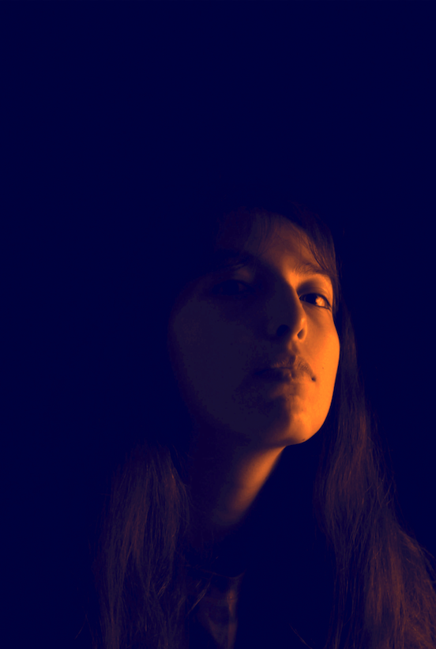

ACERCA DE MI
Hola, soy Anna
Soy diseñadora gráfica, ilustradora y fotógrafa. Me dedico a darle vida a las ideas creativas, para que tengan una identidad propia.
Comunico mensajes a través del arte y productos de diseño, donde le otorgo un valor de calidad visual para perdure en la memoria de las personas.
Busco expresarme a través de mis pinturas y encontrar mi propia voz en el mundo real y el maginario.
HISTORIA
Biografía
Anna Pardo nació en Puebla, Pue. México. Creció en una casa cercana a los populares arcos del “Barrio del artista” en Puebla, visitando a los pintores que abrían sus puertas para permitirle observar con entusiasmo sus procesos de dibujo.
Desde una edad temprana se interesó por las artes visuales e inició la elaboración de sus propios bocetos y experimentación con diferentes técnicas de ilustración análoga. Creció altamente influenciada por el diseño gráfico, ya que es la profesión a la que se dedica su familia, por lo que se involucró ampliamente con el proceso de multitud de proyectos para diferentes empresas, valorando la importancia y cualidades de trabajo de diseño, asombrada de grandes cambios, mejoras y crecimiento que genera un identidad visual.
Fue tal su interés por el ámbito empresarial y la gestión de proyectos dentro de las entidades, que decidió iniciar sus estudios profesionales con la licenciatura de administración y dirección de PYMES en la Benemérita Universidad Autónoma de Puebla.
Después de un año de arduo aprendizaje y a pesar de la alta fascinación por el área administrativa, decidió nuevamente a comenzar sus estudios en la licenciatura de Diseño Gráfico en la misma universidad de prestigio en el país. Es así como logra enfocar los conocimientos de diseño desde un punto de vista empresarial, valorando las necesidades reales y las opciones más efectivas para cada estrategia.
Anna nunca dejó de lado sus estudios sobre las artes visuales y con el paso del tiempo perfecconó sus habilidades en el arte, descubriendo los puntos de convergencias entre el arte y el diseño gráfico, que le permitieron destacar con altas notas académicas y participar en concursos universitarios ganando el primer lugar en el “Concurso de fotografía conceptual Drogradicción BUAP 2019” y mención honorífica en el “Concurso de Cartel 65 Aniversario de la Facultad de Arquitectura BUAP”.
Actualmente reside en Tecali de Herrera, Puebla y termina sus estudios en la licenciatura de diseño gráfico. En su tiempo libre se dedica a desarrollar su propio estilo trabajando como artista en comisiones de arte y labora como diseñadora gráfica en la agencia de diseño Génere.
Habilidades y áreas de experiencia
Desarrollo web
Planeación y diseño de publicaciones en redes sociales
Diseño de marca
Diseño de empaque
Diseño Editorial
Diseño de identidad gráfica global
Diseño publicitario
Fotografía profesional, Producto, exteriores y retrato.
Lettering
Arte & Ilustración Análoga y Digital
Cartel
Modelado 3D
 17.47.42.png)